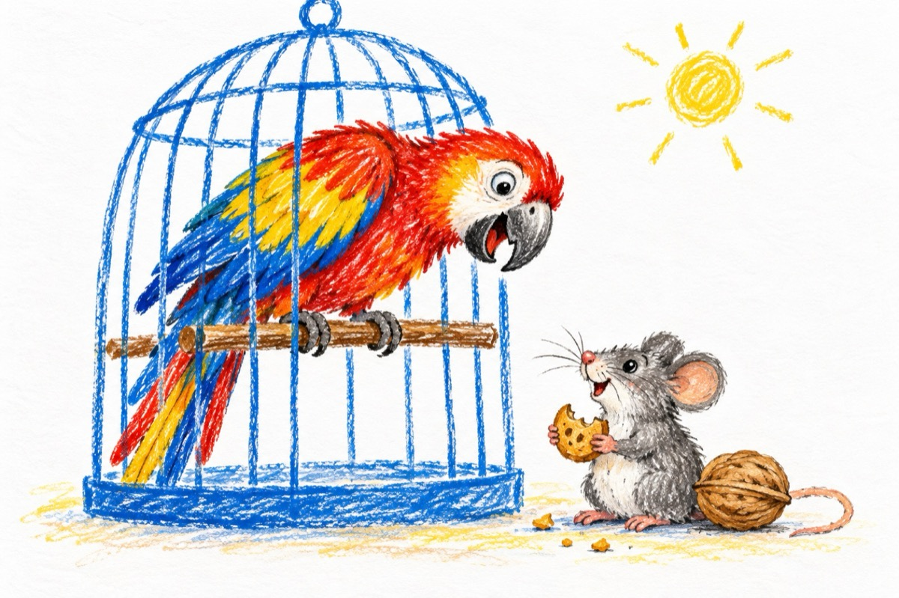

Papagalul motănel
Papagalul stând în cușcă,
Vede-n casă-un șoricel,
Și ne-având pistol sau pușcă
Ca să-l sperie nițel,
Mârâia și mieuna de ziceai că-i motănel!
Până când, la o adică
Șoricelul-nfometat,
Izbăvindu-se de frică,
În camară buzn-a dat!...
Roase-un biscuit și-o nucă,
Și-o frântură de slănină,
Apoi îi veni de ducă...
Papagalul e de ,,vină”,
Morala:
Că n-a nimerit într-una
Cămașa-i fără lumină
Și nu răsărise luna.
Vasile Groza